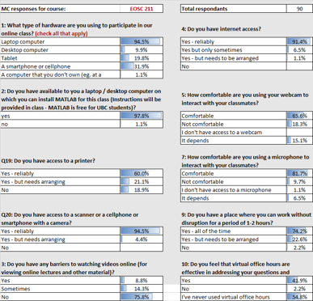
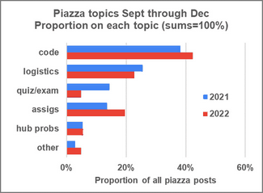

EOSC 211
Contents
EOSC 211#
Official description#
Computer Methods in Earth, Ocean and Atmospheric Sciences: Mathematical computer-based problem solving in the physical, chemical, and biological sciences. Problems drawn from studies of the earth, the oceans and the atmosphere.
Links: >Home, >UBC Calendar, >ubcexplore, >EOAS curriculum map.
OCESE project goals and Corresponding Actions#
Five project goals are listed with summaries of actions taken for each.
Python conversion: Convert classroom, lab and homework teaching and learning materials from MatLab to Python, deployed as Jupyter Notebooks.
Completed largely by one graduate student employed part time, who then served as teaching assistant during the first deployment of the course’s new Python version.
Jupyter Hubs: Establish which cloud-based approaches for serving Jupyter Notebooks will be the most stable, sustainable, scaleable.
First hub was deployed on Departmental server as UBC did not yet have a dedicated hub for undergraduate learning.
UBC’s open Jupyter hub was piloted fall 2022. Students were given the option of loading Python and Jupyter on their own laptops or using the UBC hub. Roughly 50% of students chose each option.
Experiences were mixed with student feedback about hubs obtained by survey, with results summarized on a 2-page PDF here.
Grading: Introduce automatic (or semiautomatic) grading practices, probably using the Jupyter Notebook plugin nbgrader.
Grading using nbgrader was attempted in fall 2021 but results were disappointing as getting the plugin to work reliably proved challenging.
Fall 2022 saw a more add-hoc approach developed, improving efficienty and removing dependance on irregularly mantained 3rd party software (nbgrader).
Textbook & resources: Introduce an opensource textbook, and deliver course content with similar open source technology.
Text book, mainly python programming for beginners. Adapted from Problem Solving with Python-37 by Dr. Peter Kazarinof.
For fall 2021, a Jupyter Book was built for delivering content such as syllabus, calendar of topics, links into relevant sections of the text book, and the Jupyter Notebooks for assignments & labs provided. This proved inefficient, partly because maintaining a Jupyter Book requires significant expertise with opensource software development practices.
The second iteration (Fall 2022) reverted to use of UBC’s Canvas Learning management system for delivery and submission of lecture materials, assignments, assessments, and other course content.
Documentation: Prepare documentation for procedures that teachers and students need for using open source resources, Jupyter hubs, installing Python, and preparing assessments for sem-automated grading.
Getting-started instructions for students to install Python and Jupyter Notebooks on Windows or Mac laptops. This was done with 90 students in one 1.5-hour lecture session.
See the Teaching with Jupyter NBs page.
See also tutorials on commandline, environments, Git/Github in this website’s tutorials section.
Instructors’ experiences#
Outcomes and experiences are outlined above adjacent to corresponding OCSE project goals for transforming EOSC211.
Students’ experiences#
See notes above, including feedback about Jupyter hubs.
Courses were all being taught fully online during the first months of OCESE work (fall 2020). Students in most courses in our Department were asked about access to computing and online learning resources. This was particularly important in courses involving computing and programming, and knowing the diversity of access and students’ opinions & expectations was important for instructors since they were not meeting students in class. The following is an example of data gathered with results obtained from the 90 students enrolled in EOSC 211 in fall 2020.
Discussion board activity#
Piazza discussion board topics from the first and second year after transforming eosc211 are illustrated in the figure here. Apparently, student concerns raised on the Piazza platform were relatively similar in both terms.
Most discussions were related to “code”. The course is all about programming for beginners and this is reflected in the consistent, high proportion of posts for both years.
A major challenge of deploying Python with Jupyter notebooks for 100 students was providing stable Jupyter Hubs. However, if counting the types of posts on Piazza is any indication, the relatively few posts about hubs in both 2021 and 2022 suggests that students may have been less concerned about these difficulties than instructors.
The main challenge for teachers in 2021 related to difficulties with the autograding software. This explains why there were more than twice as many posts about quizzes or exams in 2021 compared to 2022.
Lessons learned#
From the poster prepared for Earth Educator’s Rendezvous, EER 2023, “Lessons Learned While Implementing Opensource Computational Tools, Resources and Practices for Learning Quantitative Earth Sciences”:
For larger courses involving a first exposure to computing:
Critical support: Geoscie. Ed. + excellent TAs.
Jupyter hubs must be reliable, scalable & “well managed”. Refer to open source community experience (eg. https://2i2c.org/ )
For students on laptops (~33%): install using conda lockfiles.
Assessment management (a new, emerging priority):
Auto-grading: non-trivial but essential for 100+ students. E.g. PrairieLearn, nbgrader, ottergrader, gradescope, LMS, etc.
Improve LMS efficiency: Manage questions via its API.
Regarding costs#
Larger intro. courses need complete rebuilds. E.g. Adapting a first year statistics course (DSCI 100) from “R” ==> Python involved:
9 months, 4 students, 3 profs.
Rewrite original opensource text.
Adapt & test all lessons, learning activities, assessments & resources.
Stay compatible with original “R” version of the course.
Adapting a second year Earth science computing course (EOSC 211) from MatLab ==> Python involved:
12 months, 2 students, 2 profs.
Adopt an opensource text.
Adapt all lessons, learning activities and assessments.
Pilot use of Jupyter hubs (twice).
Re-work the autograding workflow.
Probably the biggest lesson was to avoid planning on deployment of Jupyter-based learning resources without a well-established Jupyter hub read to accept, deploy and maintain the materials.
The issue or auto-grading is an ongoing challenge that many courses in many institutions are facing. It is being addressed, with solutions ranging from custom to broadly based open-source. The choice depends on abilities of instructors.
Finally some general observations re. course transformation
“Pythonization” was easier on students than instructors.
Opensource textbooks are efficient & sustainable.
Students want to learn Python (based on feedback surveys).
It takes 2-3 years to shift from MatLab to Python across curriculum.
TA & student-worker support was critical!
A Geoscience education coordinatork was critical for efficiency & to help keep the focus on learning and student’s needs.